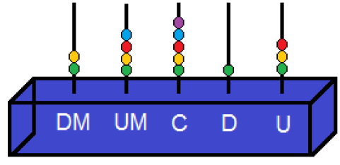
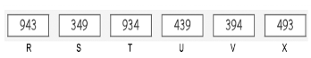
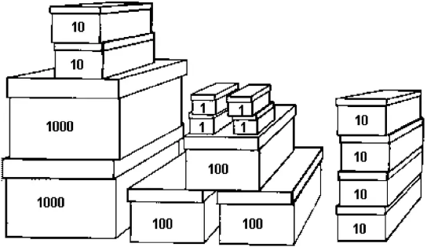
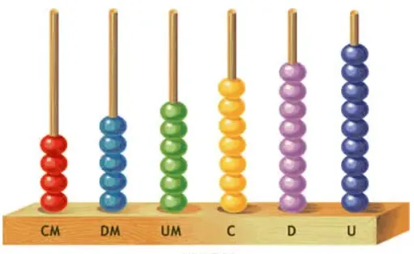

Com os algarismos 4, 7 e 5, Carlos escreveu um número em que o 7 vale 700 unidades e o 4 vale 40 unidades. O número escrito por Carlos.
Luísa está concorrendo a um sorteio com o número 5 798. O algarismo que ocupa a ordem das dezenas nesse número é
A professora de Geografia escreveu no quadro abaixo o número de habitantes da cidade onde ela nasceu.
24.560
Qual é o valor posicional do algarismo 4 nesse número?
Observe os algarismos no quadro abaixo:
6, 4, 3, 1, 8
Qual é o maior número, de cinco algarismos diferentes, que pode ser formado usando os algarismos desse quadro?
Lia mora na casa de número 8 732. Uma das decomposições desse número é.
O número 24.513 está representado no ábaco abaixo.

O algarismo que se encontra na ordem das unidades de milhar nesse ábaco é
Observe os cartões a seguir:

Em quais cartões o número 3 representa o valor 300?
Observe abaixo a decomposição do número 789 que quatro estudantes fizeram.
Mariana: 7 000 + 80 + 9
Joaquim: 700 + 80 + 9
Rosa: 70 + 80 + 9
Pedro: 7 + 8 + 9
Qual desses estudantes fez a decomposição do número 789 corretamente?
Numa farmácia, um medicamento foi embalado em caixas onde cabem 1000, 100, 10 e 1 unidades. O total de caixas utilizadas aparece na figura abaixo:

Quantas unidades desse medicamento foram embaladas?
Sâmia organizou o ábaco abaixo:

Qual o número que ela quis representar?